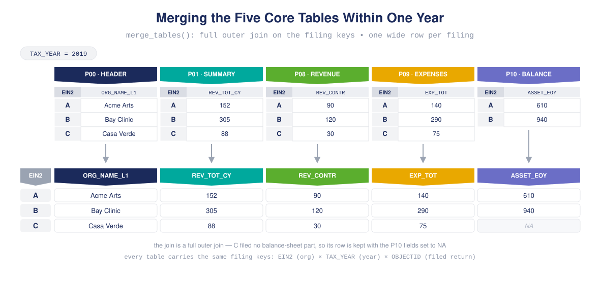

Retrieve, normalize, and assemble clean longitudinal panels from IRS 990 e-file data.
panel990 turns the hundreds of raw IRS 990 e-file tables into analysis-ready organization-by-year panels. It downloads and merges the tables, harmonizes their many blank-encoding conventions, classifies how each organization enters and exits the panel, and fills or smooths gaps — all while keeping a running ledger of everything it did.
It sits in the middle of the nonprofit open-data pipeline:
ef2 ──▶ panel990 ──▶ fiscal
(build (assemble & (fiscal-health
tables) normalize metrics)
panels)Installation
# install.packages("remotes")
remotes::install_github("Nonprofit-Open-Data-Collective/panel990")The DuckDB backend (for panels too large to hold in memory) is optional — install it only if you need it:
install.packages(c("DBI", "duckdb"))Overview
A 990 filing is spread across dozens of tables, each with its own grain, and the same organization files every year. Building a panel from this means solving four recurring problems, one per verb family:
| Problem | panel990 answer |
|---|---|
| Download, read, merge, and stack the right tables |
panelize() — one call, automatic filing keys |
| Blanks that sometimes mean zero and sometimes mean “not applicable” |
panel_normalize() — form-scoped, non-filer-safe |
| Organizations enter, leave, and skip years |
panel_describe() / panel_filter() classification |
| Missing years and noisy series |
panel_impute() / panel_smooth() / panel_complete()
|
Every operation flows through a panel object that bundles the data with its sample frame (the reusable specification of keys and rules) and a provenance log you can print at any time with manifest().
Key features
-
One-call assembly —
panelize()runs download → read → merge → stack and assigns the filing keys (EIN2entity,TAX_YEARtime,OBJECTIDrecord) automatically. Optional NCCS Business Master File join viabmf = "auto". -
The panel object — data + sample frame + provenance travel together through a pipe of polymorphic
panel_*verbs; extract withas.data.frame(). -
Form-aware normalization —
panel_normalize()interprets blank core financials as zero only where the filed form actually asked the question (990 vs. 990EZ), and never fabricates zeros for non-filer rows. -
Two-axis panel classification — an organization’s
panel_type(boundary membership) andpanel_spell(continuity) are classified independently. - Gap handling — impute single-year gaps, smooth series with rolling windows, complete spans, and balance panels.
-
Accounting consistency —
accounting_check()andreconcile()test and minimally adjust rows against 58 bundled 990 accounting identities. - Scales past memory — an optional DuckDB backend handles panels that don’t fit in RAM, with identical results to the in-memory path.
Panel classification vocabulary
panel_type and panel_spell are orthogonal — every organization gets one label from each axis.
panel_type (boundary) |
Meaning |
|---|---|
persistent |
present in the first and last panel year |
entrant |
absent at the start, present at the end |
exit |
present at the start, absent at the end |
transient |
present only in the interior |
panel_spell (continuity) |
Meaning |
|---|---|
seamless |
every year between first and last is present |
segmented |
one or more interior years are missing |
Reproducible example
The canonical workflow: assemble a four-year panel of the core financial tables, inspect it, then clean it. Each cleaning step travels with the sample frame and is recorded in the manifest. (panelize() downloads from the public NCCS e-file store, so this example needs network access.)
library(panel990)
# 1. Download -> read -> merge -> stack five core tables across four years.
# Filing keys (EIN2 / TAX_YEAR / OBJECTID) are assigned automatically;
# bmf = TRUE attaches NCCS Business Master File organization traits.
panel <- panelize(
tables = c("P00", "P01", "P08", "P09", "P10"),
years = 2019:2022,
bmf = TRUE
)
# 2. See who enters, exits, persists, and where the gaps are.
panel_describe(panel)
# 3. Clean the panel. Every step is logged into the sample frame.
panel <- panel |>
panel_deduplicate() |> # one filing per org-year
panel_normalize() |> # blank core financials -> 0
panel_impute(max_gap_size = 1) |> # fill single-year gaps
panel_smooth(vars = "F9_08_REV_TOT_TOT", window = 3)
# 4. Pull the tidy data frame and the provenance ledger.
df <- as.data.frame(panel)
manifest(panel) # every step: rows in/out, rules appliedHow panelize() assembles the panel
That one call in step 1 does three things. First, within each year it merges the five tables into one wide row per filing. Each table holds one part of the 990 form and carries the same filing keys — EIN2 (organization), TAX_YEAR (year), and OBJECTID (one id per filed return). The join is a full outer join, so a filing missing from one part keeps its row (with NAs) instead of being dropped.

Second, the merged per-year tables are stacked into one long panel. The per-year frames share a harmonized column layout, so they append into a single table with one row per organization-year:

Third, bmf = TRUE appends organization traits from the NCCS Business Master File. The BMF holds one row per organization — time-invariant traits like name, NTEE code, subsection, and geography — left-joined on EIN2 and broadcast to every year that organization appears. Filings without a BMF match are kept, with the BMF columns set to NA.

Want the raw tables instead of a normalized panel? download_tables(), read_tables(), and merge_tables() expose each stage of panelize(). Want a reusable specification? create_sfw() builds a sample frame of keys and typed rules that you can carry across projects and hand directly to panelize().
Learn more
The package ships task-focused vignettes:
- Downloading tables and the sampling framework — getting data in
- Panels and slices — the classification vocabulary
- Imputing gaps, smoothing panels, completing spans, balancing panels — cleaning
- Accounting consistency and consistent gap-filling — validation
browseVignettes("panel990")Related packages
- ef2 — builds the upstream IRS 990 e-file tables that panel990 consumes.
- fiscal — computes nonprofit fiscal-health metrics on the panels panel990 produces.
Part of the Nonprofit Open Data Collective.